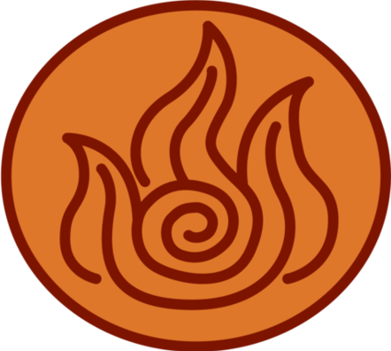
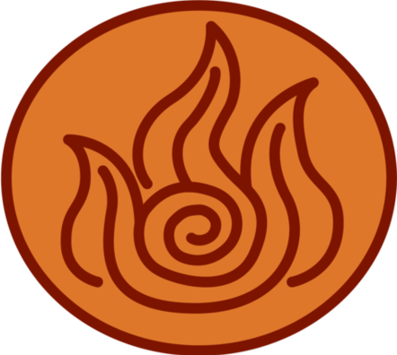

Mi nombre es Karla Denisse
Soy una futura ingeniera :)


Tengo 19 años, Estudio ingenieria telematica en la Unidad Profesional Interdisciplinaria de Ingenieria y Tecnologias Avanzadas UPIITA Mi escuela
 

Aprendi a programar en C en tercero de secundaria, desde ahi supe que tenia que estudiar algo relacionado con programacion. Actualmente dentro de la carrera he desarrollado mi habilidad en este lenguaje, y llegado a manejar hasta distintas estructuras de datos.

Mi primer semestre tuve la materia en C++ con la base de la Programacion orientada a objetos, aprendi los conceptos basicos de ella.
Dentro de la carrera, curse un semestre completo en la POO en Java, puedo diseñar interfaces, procesos, herencias, etc. Ademas de poderlas conectar a bases de datos
Mi tercer semestre curse la materia de bases de datos, aprendiendo el lenguaje SQL y manejando diversos gestores de bases de datos con el que mas trabaje fue con MySQl, en donde se realizo un proyecto con una interfaz en Java simulando una app de venta para salas de conciertos.
Actualmente curso un semestre de ingenieria web, en lenguajes como HTML, CSS...
Soy mexicana, asi que mi lengua materna es el español
Desde muy corta edad emepece a estudiar el idioma ingles, alcance un nivel B1 a la edad de 12 años (aprox) y a la edad de 16 consegui mi nivel C1, actualmente una de mis metas es certificar un nivel C2. Tambien doy clases particulares de este idioma :)
Llevo aproximadamente un año estudiando alemán, me gusta mucho y estoy en proceso de obtener un nivel A2.